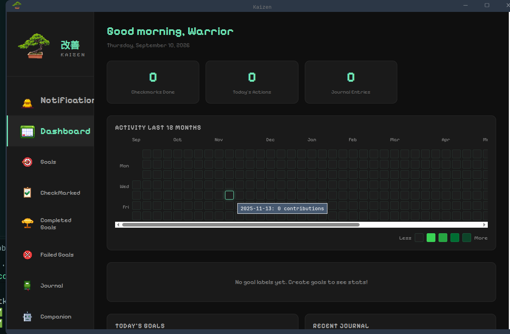

What's inside
🎯 Goals
Daily, weekdays, weekends, 3× a week or custom days, each with its own time window and label.
✅ CheckMarked
A tracking grid where every check needs a journal entry. Checks are permanent; missed days close at midnight.
📓 Journal + Kai
Write reflections with a mood. Kai, your AI companion, replies locally via Ollama.
📊 Dashboard
A 12-month activity grid, a radar chart of your goal labels and live stats.
🔒 Local-first
Everything stays on your machine. No account, no cloud, no tracking. Daily backups included.
🎨 Pixel look
Animated pixel sprites, dark and light themes, and a weekly review to look back on.
See it
